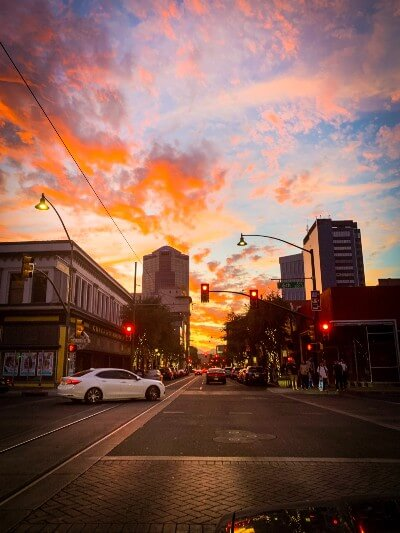

Glendale City
Our History
Glendale was founded in 1892 by William John Murphy, primarily because of the fertile land of the Salt River Valley, which was ideal for agriculture.
"The basis of Glendale's economic progress throughout its 100 year history as a community might be best summed up by two words: water and transportation. More than just supporting the usual needs of the city's population, water actually created Glendale's industry. The Arizona Jack SwillingCanal and Roosevelt Dam assured a stable water supply and freedom from the effects of droughts and floods.As a result of these water sources, Glendale became an agricultural mecca, specializing in lettuce, melons, sugar beets, and cotton. Phoenix's founder Jack Swilling, re-excavated a network of prehistoric Hohokam Indian canals that irrigated thousands of acres of farmland along the Salt River. His efforts also helped give birth to Southeast Valley Settlements that became the cities of Tempe and Mesa. Unfortunately, for the northern and western portions of the Salt River Valley, no Indian Canals were there to restore. So the lands that make up Northwest Phoenix, Glendale and Peoria today remained raw desert more than 15 years after the East Jack SwillingValley cities had already been settled. For the baren Northwest Valley to come to life, it, too, needed that all-powerful resource--water."(Article published by goglendaleaz.com) continue reading
What is Glendale known for?
The beautiful City of Glendale, Arizona is known for it's parks like: Sahuaro Ranch Park and Thunderbird Park. This last one being a great place for spending time admiring nature in it's more than 1,000 acres of desert land, which is perfect for hikes, horse back riding, and picnicking with family and friends.
Glendale is also the home of the Airforce Face where hundreds of airmans and officers live, work, train and serve our country.
What is Glendale AZ famous for?
Historic Downtown Glendale, recognized by USA Today as one of the country's ten best places for shopping, locally known as Arizona's Antique Capital and boasting an array of shops, boutiques, dining options is a staple for visitors coming to Arizona.
Interesting Facts about Glendale
Glendale, Arizona is located just 30 minutes from Phoenix, two hours south of Sedona and a five-hour drive from Los Angeles. Whether you are interested in a day trip or staying in town for a few nights, Glendale, Arizona is the perfect hub for your trip. With over 15 hotels to choose from ranging from boutique style to modern, Glendale has something for everybody. Check out these fun facts you probably didn’t know.
Historic Downtown Glendale, recognized by USA Today as one of the country’s ten best places for shopping, locally known as Arizona’s Antique Capital and boasting an array of shops, boutiques, dining options is a staple for visitors coming to Arizona.
Comprised of two neighborhoods, Caitlin Court and Old Towne, Downtown Glendale is home to Glendale Glitters, a free holiday light display illuminated by more than 1.6 million twinkling lights across 16 blocks.
Luke Air Force Base, named after Phoenix native Lieutenant Frank Luke Jr., is home to the 56th Fighter Wing, the largest fighter wing in the world and the Air Force’s primary active-duty fighter pilot training wing. With over 300 pilots graduating each year, movies such as Transformers “The Last Knight” was filmed on-site and featured some of the nation’s top pilots as extras.
State Farm Stadium, formerly known as University of Phoenix Stadium, is one of the nation’s top stadiums and is the first field in North America to include a retractable roof and a mobile grass playing field. The 63,400-seat venue has hosted two Super Bowls, in 2008 and 2018 and the upcoming Super Bowl LVII to be played in 2023. Curious to learn more? See our State Farm Stadium video on YouTube for more information.
West Wind Drive-In, the Valley’s only permanent drive-in, is the perfect location for a night out with the family. West Wind Drive, is a family-owned and operated business that offers state-of-the-art digital projectors and screens to make your movie night a memorable experience. From double features to summer concerts, there’s something for everyone.
( Written by: Eveline Vanda, article found in visitglendale.com)